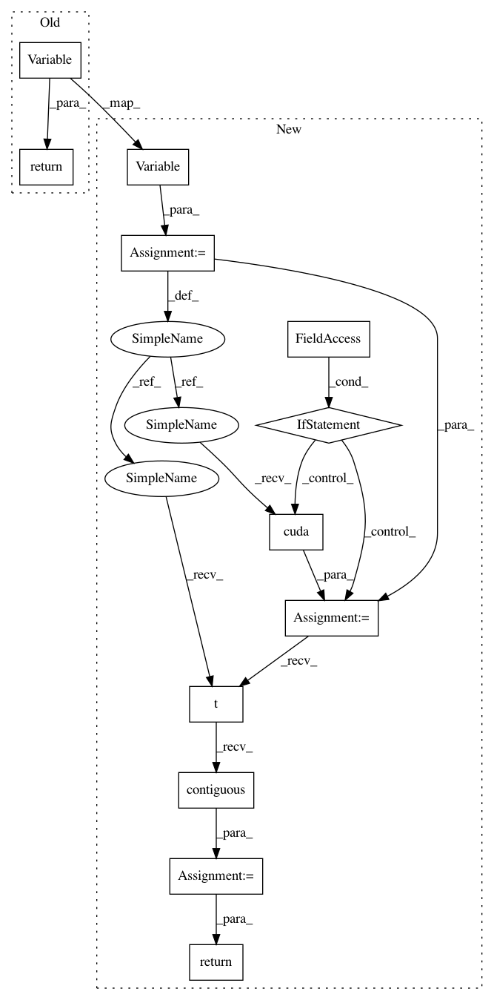

d88d3777c2b5c8c6471720252bca4c1987e6366e,OpenNMT/onmt/Dataset.py,Dataset,_batchify,#Dataset#Any#Any#,18
Before Change
data_length = data[i].size(0)
offset = max_length - data_length if align_right else 0
out[i].narrow(0, offset, data_length).copy_(data[i])
return Variable(out)
def __getitem__(self, index):
assert index < self.numBatches, "%d > %d" % (index, self.numBatches)
srcBatch = self._batchify(
After Change
offset = max_length - data_length if align_right else 0
out[i].narrow(0, offset, data_length).copy_(data[i])
v = Variable(out)
if self.cuda:
v = v.cuda()
v = v.t().contiguous() // FIXME
return v
def __getitem__(self, index):
assert index < self.numBatches, "%d > %d" % (index, self.numBatches)
srcBatch = self._batchify(
In pattern: SUPERPATTERN
Frequency: 3
Non-data size: 12
Instances
Project Name: OpenNMT/OpenNMT-py
Commit Name: d88d3777c2b5c8c6471720252bca4c1987e6366e
Time: 2017-02-22
Author: alerer@fb.com
File Name: OpenNMT/onmt/Dataset.py
Class Name: Dataset
Method Name: _batchify
Project Name: pytorch/examples
Commit Name: d88d3777c2b5c8c6471720252bca4c1987e6366e
Time: 2017-02-22
Author: alerer@fb.com
File Name: OpenNMT/onmt/Dataset.py
Class Name: Dataset
Method Name: _batchify
Project Name: OpenNMT/OpenNMT-py
Commit Name: c751a1dd8a724388437916e9d29653c45fc4f14f
Time: 2017-02-22
Author: alerer@fb.com
File Name: onmt/Dataset.py
Class Name: Dataset
Method Name: _batchify